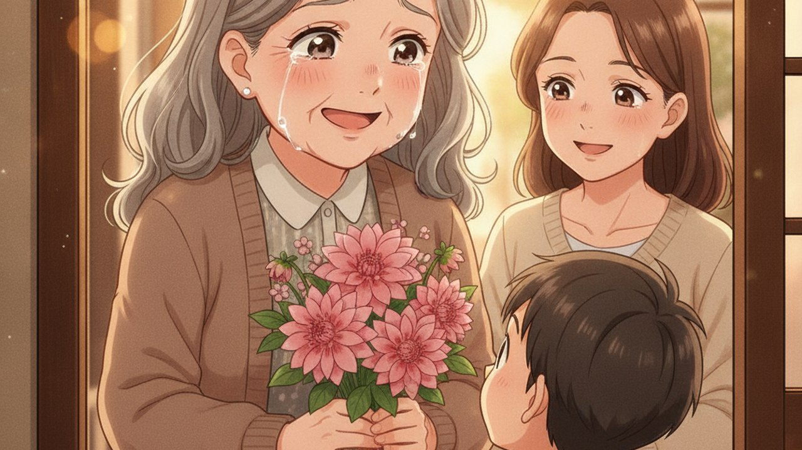
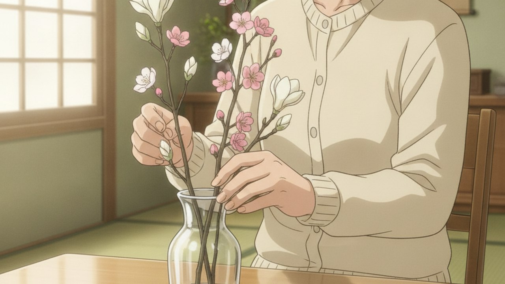

flower shop 叶色 colorful アニメ版 v2 - 2案比較
アニメ広告 動画構成モックアップ 2案／ターゲット40-60代女性／2026-07-22 制作：ランバード
■ この提案の結論（先にお伝えします）
- 2案ご提示：A案「花に心テイスト（3世代還暦・感動軸）」 vs B案「マルコメ料亭の味テイスト（母の日常・穏やか軸）」
- 両案とも12シーン・約40秒構成。40-60代女性への刺さり方が全く異なるため方向性の選択が最初の分岐点
- 推奨は A案（花に心）：40-60代女性が3世代のどの立場からも自分事化しやすく、感情のピークが明確。ただし B案はブランド確立・繰り返し視聴向き
🖼 サンプル画像で見比べ（同じ「花屋×花贈り」でこれだけトーンが違う）

A案：花に心 — 祖母の涙、感動ピーク（SCENE 10）

B案：マルコメ — 花を生ける、静かな日常（SCENE 8）
📊 2案 比較サマリ
| 項目 | A案：花に心テイスト | B案：マルコメ料亭の味テイスト |
|---|
| キーワード | 感動・節目イベント・涙 | 日常・穏やか・繰り返し |
| ストーリー軸 | 娘＋孫が祖母に還暦祝いの花束を渡す | 60代女性の一日、暮らしに花が寄り添う |
| 感情ピーク | SCENE 10（祖母の涙）で最大 | ゆるやかな上昇、大きな山なし |
| 登場人物 | 4人（森岡さん・娘・孫・祖母） | 2人（森岡さん・お客様60代） |
| 光・色調 | 朝→夕方の琥珀色へ移行 | 朝の生成り→自然光で終始一定 |
| BGM | ピアノ→弦楽で盛り上げ | ピアノソロで終始静か |
| 40-60代刺さり | ★★★★★（娘・母・祖母どの立場でも共感） | ★★★★（自分の日常と重ねる共感） |
| SNS/広告向き | ◎（1回目で強く印象） | ○（繰り返し視聴でジワる） |
| 制作コスト | 4営業日 | 3営業日 |
A案花に心テイスト — 3世代・還暦の花贈り（12シーン・約40秒）
物語：娘が孫を連れて叶色で花を選び、祖母（60代）に還暦祝いの花束を渡す。3世代の絆と花屋の温かさを描く。
参考：アイダ設計「アニメ・アイ」／花に心様 広告動画
S1
朝の街
0:00 – 0:03
あびこの朝
40代娘と小学生の孫、手をつないで街を歩く
🎼 ピアノ静かにイン
.
0:03 – 0:06
colorful の看板
孫「あ、お花屋さんだ！」娘、店に目を向ける
テロップ：「街の、小さな花屋さん」
S3
入店
0:06 – 0:09
店内、色とりどりの花
木の梁、レトロな店内。花に囲まれる二人
🎼 ピアノに弦楽そっと重なる
.
0:09 – 0:12
森岡さん、笑顔で迎える
「今日はどんな花を？」穏やかな笑顔
—
S5
会話
0:12 – 0:15
娘「祖母の還暦なんです」
孫、大きく頷く。森岡さん、目を細める
テロップ：「大切な人へ、花を」
S6
花選び
0:15 – 0:18
森岡さんの手元
ピンクのダリア・カーネーションを丁寧に選ぶ
—
S7
包む
0:18 – 0:21
花束を包む手元マクロ
ペーパーで丁寧に包み、リボンを結ぶ
テロップ：「想いを、花に込めて」
S8
受け取り
0:21 – 0:24
娘と孫、店を出る
花束を大切に抱えて。夕方の光
🎼 弦楽 盛り上がり
S9
実家玄関
0:24 – 0:27
祖母、扉を開ける
60代祖母（グレーヘア）、驚く
—
.
0:27 – 0:31
孫「おばあちゃん、還暦おめでとう！」
祖母、涙ぐみながら花束を受け取る
テロップ：「還暦、おめでとう」
.
0:31 – 0:34
3人で笑顔。花束が中心
夕方の琥珀色の光。祖母の涙と笑顔
🎼 弦楽最高潮
S12
メッセージ
0:34 – 0:37
花束クローズアップ
光にきらめく花びら
テロップ：「花のある暮らしを、あなたへ」
CTA
店舗情報
0:37 – 0:40
colorful Flower shop
ロゴ／TEL／住所／営業時間／QR×2
既存完成版CTAを流用
B案マルコメ料亭の味テイスト — 母の日常に花が寄り添う（12シーン・約40秒）
.
0:00 – 0:03
キッチンの朝
60代女性、お湯を沸かす。窓から柔らかい光
🎼 ピアノソロ、終始一定
S2
玄関チャイム
0:03 – 0:06
ピンポーン
誰かな？と扉を開ける
—
.
0:06 – 0:09
花束が置かれていた
娘からのメッセージカード「ありがとう」
テロップ：「今日も、いい日になりそう」
S4
回想
0:09 – 0:12
回想：叶色 店内
娘が花を選ぶ、森岡さんが笑顔で対応
—
S5
回想②
0:12 – 0:15
森岡さんの手元
花束を包む手元マクロ、丁寧に
テロップ：「街の、小さな花屋さん」
S6
戻る
0:15 – 0:18
現在、玄関で花束を抱える母
微笑む、目を細める
—
S7
花瓶
0:18 – 0:21
花瓶を用意する
水を注ぐ、いつもの手つき
—
.
0:21 – 0:24
1本ずつ生ける
花と対話するような手元
テロップ：「花のある暮らし」
S9
食卓
0:24 – 0:27
食卓に花瓶を置く
朝食の準備、花が中央に
—
S10
コーヒー
0:27 – 0:30
コーヒーを淹れる
花を見ながら、微笑む
—
S11
電話
0:30 – 0:33
娘に電話「ありがとう」
短い会話、静かな声
テロップ：「あなたの誰かに、花を」
.
0:33 – 0:37
花瓶の花のクローズアップ
光がゆっくり移ろう。日常が続く
🎼 ピアノ余韻を残す
CTA
店舗情報
0:37 – 0:40
colorful Flower shop
ロゴ／TEL／住所／営業時間／QR×2
既存完成版CTAを流用
📺 参考動画（判断材料）
🛠 制作フロー（両案共通）
| ステップ | ツール | 内容 | A案 | B案 |
|---|
| ① キャラデザ | GPT-Image / Midjourney | 登場人物の設計 | 0.5日（4体） | 0.3日（2体） |
| ② シーン画像生成 | GPT-Image / Midjourney | 12シーン分の静止画 | 1.5日 | 1日 |
| ③ 動画化 | Lovart image2video / Runway | 各カット3-4秒動画化 | 1日 | 1日 |
| ④ 編集 | Premiere Pro | カット繋ぎ・BGM・テロップ | 0.5日 | 0.5日 |
| ⑤ 修正対応 | — | 1〜2回転想定 | 1日 | 0.5日 |
| 合計 | 4営業日 | 3営業日 |
🚀 次のアクション
- 鈴木さん：どちらの案で進めるか決定（A案／B案／混合）
- 選択案の主要キャラ1体をサンプル生成（森岡さん or 母 or 祖母）
- SCENE 1 のサンプル画像1枚生成で方向確認
- OK → 全12シーン制作へ突入（3〜4営業日）